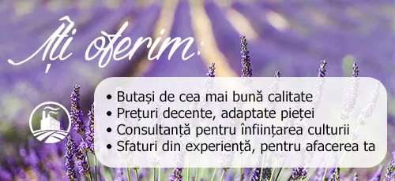

Lavanda este o plantă perenă care poate decora spectaculos grădina dumneavoastră pe perioada verii, din iunie până în septembrie. Efectul decorativ excepţional se păstrează şi în afara sezonului floral prin aspectul foarte plăcut al tufei de lavandă. Frunzele de un verde viu primăvara si vara, verde-argintiu toamna si iarna, precum si forma tufei uşor de modelat, fac din lavandă un excelent element de decor al gradinii.
Ramurile, frunzele şi mai ales florile dau un miros puternic de lavandă cu un efect repelent pentru insectele nedorite, dar şi un parfum liniştitor şi relaxant.
| Pachet Minimal 25 bucati |
Pachet Gradina 50 bucati |
Pachet gradina Max 75-275 bucati |
|---|---|---|
| 3 Lei | 2 Lei | 1,8 Lei |
|
|
|
Luând în considerare tot efortul depus de noi, cerințele pieței și respectul față de dumneavoastră, am încercat mereu să avem un preț corect care să lase loc de încredere și stabilirea unor relații sănatoase, de lungă durata. Noi nu plecăm nicăieri și cu asta plănuim să ne ocupăm mulți ani de acum înainte, așa că dacă doriți să ne vizitați, să stăm de vorbă și să ”punem țara la cale”, plăcerea va fi de partea noastră. Dacă ați citit articolele noastre, bănuim că deja ne cam cunoașteți. Suntem deschiși, curioși și dornici să împărtășim informații, pentru că atunci când ne vom strânge mai mulți, mai pasionați, mai hotărâți, n-are cum să fie decât bine pentru domeniul acesta.
Inființarea unei culturi de lavandă nu e o decizie ușoară, chiar dacă sunt foarte multe argumente care te îndeamnă spre o rezoluție pozitivă. Nu e o hotărâre ușoară pentru că odată luată și pornite primele demersuri, cel puțin 15 ani știți cu ce vă veți ocupa . Indiferent că o demarați ca o mică afacere de după serviciu sau puneți bazele unei afaceri care să vă ocupe tot timpul, trebuie să luați în considerare că faceți o investiție pe termen lung, care vă va schimba viața. E genul de decizie pe care o iei alături de întreaga familie și după balansarea tuturor argumentelor, poate o să faceți parte dintre fericiții care ajung la concluzia că o afacere cu lavandă e fix ce trebuie. Ar fi imatur și iresponsabil să nu vă spunem care sunt cele mai neplăcute aspecte ale unei culturi de lavandă.
Argumentele mai puțin pozitive nu sunt de neglijat și nici tratate cu usurință pentru că vă pot influența negativ activitatea, dar odată înțelese și asumate probabil că e timpul să trecem la motivele care v-ar putea determina să deveniți cultivator de lavandă.
